import pandas as pd
import matplotlib.pyplot as plt
import seaborn as snsBuild and Evaluate a Logistic Regression Model
A logistic regression is a type of model which can be used when predicting a categorial outcome. Specifically, it outputs a predicted probability that an observation is in one class or the other.
In this notebook, you’ll see how to build a logistic regression model to predict presence or absence of heart disease in a patient based on 13 characteristics.
heart = pd.read_csv('../data/Heart.csv')heart.shape(297, 14)heart.head(2)| Age | Sex | ChestPain | RestBP | Chol | Fbs | RestECG | MaxHR | ExAng | Oldpeak | Slope | Ca | Thal | AHD | |
|---|---|---|---|---|---|---|---|---|---|---|---|---|---|---|
| 0 | 63 | 1 | typical | 145 | 233 | 1 | 2 | 150 | 0 | 2.3 | 3 | 0.0 | fixed | No |
| 1 | 67 | 1 | asymptomatic | 160 | 286 | 0 | 2 | 108 | 1 | 1.5 | 2 | 3.0 | normal | Yes |
The variables are as follows:
| Variable | Description |
|---|---|
| Age | age in years |
| Sex | Sex (0 = female; 1 = male;) |
| ChestPain | chest pain type |
| RestBP | resting blood pressure (in mm Hg on admission to the hospital) |
| Chol | serum cholestoral in mg/dl |
| Fbs | fasting blood sugar > 120 mg/dl (1 = true; 0 = false) |
| RestECG | resting electrocardiographic results (0: normal; 1: having ST-T wave abnormality (T wave inversions and/or ST elevation or depression of > 0.05 mV); 2: showing probable or definite left ventricular hypertrophy by Estes’ criteria) |
| MaxHR | maximum heart rate achieved |
| ExAng | exercise induced angina (0 = no, 1 = yes;) |
| Oldpeak | ST depression induced by exercise relative to rest |
| Slope | the slope of the peak exercise ST segment (1: upsloping; 2: flat; 3: downsloping) |
| Ca | number of major vessels (0-3) colored by flourosopy |
| Thal | Thallium stress test |
| AHD | Presence of heart disease (target) |
heart['AHD'].value_counts()No 160
Yes 137
Name: AHD, dtype: int64We can see that 137 patients in our data do have a heart disease diagnosis and 160 do not.
First, let’s do some exploratory analysis to see how the other variables relate to the target.
pd.crosstab(heart['Sex'], heart['AHD'])| AHD | No | Yes |
|---|---|---|
| Sex | ||
| 0 | 71 | 25 |
| 1 | 89 | 112 |
pd.crosstab(heart['Sex'], heart['AHD'], normalize = 'index')| AHD | No | Yes |
|---|---|---|
| Sex | ||
| 0 | 0.739583 | 0.260417 |
| 1 | 0.442786 | 0.557214 |
ax = pd.crosstab(heart['Sex'], heart['AHD'], normalize = 'index').plot(kind = 'bar',
edgecolor = 'black',
figsize = (6,4))
plt.xticks(rotation = 0)
ax.set_xticklabels(['Female', 'Male'])
plt.legend(loc = 'upper right')
plt.ylabel('Proportion');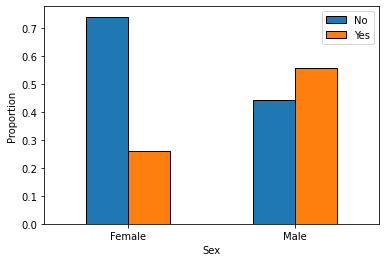
pd.crosstab(heart['RestECG'], heart['AHD'], normalize = 'index').plot(kind = 'bar',
edgecolor = 'black',
figsize = (8,4))
plt.xticks(rotation = 0)
plt.legend(loc = 'upper right')
plt.ylabel('Proportion');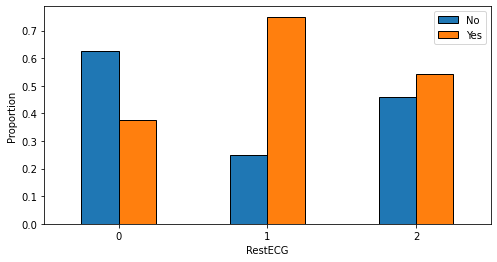
plt.figure(figsize = (8,4))
sns.boxplot(data = heart,
x = 'AHD',
y = 'Age');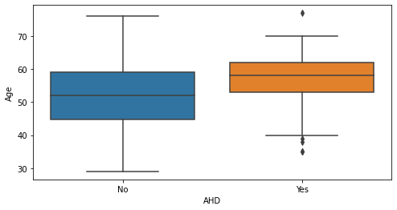
We’ve got several categorical variables. In order to use these with scikit-learn models, we’ll need to encode them as a number.
To accomplish this, we can use the get_dummies method.
categorical_variables = ['ChestPain', 'RestECG', 'Slope', 'Thal']
heart = pd.get_dummies(heart, columns = categorical_variables)heart.head()| Age | Sex | RestBP | Chol | Fbs | MaxHR | ExAng | Oldpeak | Ca | AHD | ... | ChestPain_typical | RestECG_0 | RestECG_1 | RestECG_2 | Slope_1 | Slope_2 | Slope_3 | Thal_fixed | Thal_normal | Thal_reversable | |
|---|---|---|---|---|---|---|---|---|---|---|---|---|---|---|---|---|---|---|---|---|---|
| 0 | 63 | 1 | 145 | 233 | 1 | 150 | 0 | 2.3 | 0.0 | No | ... | 1 | 0 | 0 | 1 | 0 | 0 | 1 | 1 | 0 | 0 |
| 1 | 67 | 1 | 160 | 286 | 0 | 108 | 1 | 1.5 | 3.0 | Yes | ... | 0 | 0 | 0 | 1 | 0 | 1 | 0 | 0 | 1 | 0 |
| 2 | 67 | 1 | 120 | 229 | 0 | 129 | 1 | 2.6 | 2.0 | Yes | ... | 0 | 0 | 0 | 1 | 0 | 1 | 0 | 0 | 0 | 1 |
| 3 | 37 | 1 | 130 | 250 | 0 | 187 | 0 | 3.5 | 0.0 | No | ... | 0 | 1 | 0 | 0 | 0 | 0 | 1 | 0 | 1 | 0 |
| 4 | 41 | 0 | 130 | 204 | 0 | 172 | 0 | 1.4 | 0.0 | No | ... | 0 | 0 | 0 | 1 | 1 | 0 | 0 | 0 | 1 | 0 |
5 rows × 23 columns
Let’s start with a simple model - predicting heart disease based on age.
X = heart[['Age']] # Predictor variable (as a DataFrame)
y = heart['AHD'] # TargetThe main objective is to have a model which makes good predictions on unseen data. Therefore, in order to evaluate how good a model is, it is necessary to set aside some data as a test set for evaulation purposes. This can be accomplished using the train_test_split function.
from sklearn.model_selection import train_test_splitX_train, X_test, y_train, y_test = train_test_split(X, y,
stratify = y, # Keep the same proportions of the target in the training and test data
test_size = 0.25,
random_state = 321)from sklearn.linear_model import LogisticRegressionlogreg = LogisticRegression() # Create a logistic regression model
logreg.fit(X_train, y_train) # Fit it to the training dataLogisticRegression()To understand the model, we can look at its coefficients.
logreg.intercept_array([-2.90727934])logreg.coef_array([[0.04973534]])y_pred_prob = logreg.predict_proba(X_test)[:,1]i = 10
print('Patient Information:\n{}'.format(X_test.iloc[i]))
print('---------------------------------')
print('Predicted Probability of Heart Disease: {}'.format(y_pred_prob[i]))
print('Actual: {}'.format(y_test.iloc[i]))Patient Information:
Age 41
Name: 114, dtype: int64
---------------------------------
Predicted Probability of Heart Disease: 0.2956434510766428
Actual: NoOne way to analyze your model is to look at the receiver operating characteristic (ROC) curve. This shows how the true positive rate and false positive rate change as the prediction threshold changes.
This value can be interpreted as how likely the model is to assign a higher probability to a positive observation compared to a negative one.
from sklearn.metrics import roc_auc_score, roc_curvefp_rate, tp_rate, thresholds = roc_curve(y_test == 'Yes', y_pred_prob)
plt.plot(fp_rate, tp_rate)
plt.xlim([0.0, 1.0])
plt.ylim([0.0, 1.0])
plt.title('ROC curve for Heart Disease Prediction')
plt.xlabel('False Positive Rate (1 - Specificity)')
plt.ylabel('True Positive Rate (Sensitivity)')
plt.grid(True)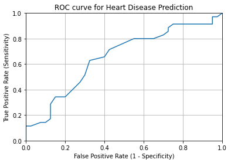
AUC - percentage of the ROC plot that is under the curve
A perfect model would have AUC = 1.
roc_auc_score(y_test, y_pred_prob)0.6542857142857144Analyzing Predictions
To generate predictions, you can use the predict method of your model.
from sklearn.metrics import confusion_matrix, classification_report
from cm import plot_confusion_matrixy_pred = logreg.predict(X_test)confusion_matrix(y_test, y_pred)array([[32, 8],
[23, 12]])print(classification_report(y_test, y_pred)) precision recall f1-score support
No 0.58 0.80 0.67 40
Yes 0.60 0.34 0.44 35
accuracy 0.59 75
macro avg 0.59 0.57 0.56 75
weighted avg 0.59 0.59 0.56 75
plot_confusion_matrix(y_test, y_pred, labels = ['No', 'Yes'])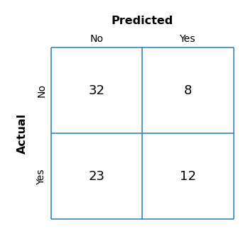
There are a number of metrics you can use to evalute your model.
Accuracy: the total proportion of predictions which are correct.
plot_confusion_matrix(y_test, y_pred, labels = ['No', 'Yes'], metric = 'accuracy')Sensitivity/True Positive Rate: The proportion of true positives (in our case, people who survived) that are identified as such.
plot_confusion_matrix(y_test, y_pred, labels = ['No', 'Yes'], metric = 'sensitivity')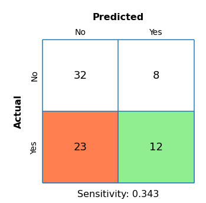
Specificity/True Negative Rate: The proportion of true negatives (in our case, people who died) that are identified as such.
plot_confusion_matrix(y_test, y_pred, labels = ['No', 'Yes'], metric = 'specificity')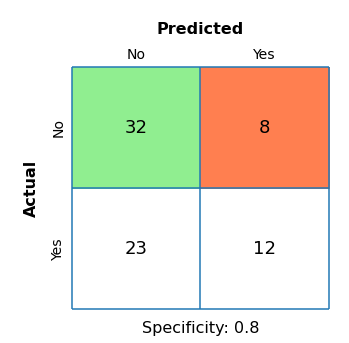
Precision: The proportion of predicted positives that are actually positive (survived).
plot_confusion_matrix(y_test, y_pred, labels = ['No', 'Yes'], metric = 'precision')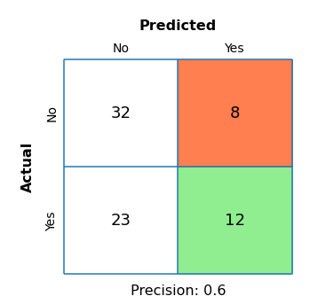
We have only used a single predictor in the above model. Let’s see if we can improve our model by using the rest of the predictors.
X = heart.drop(columns = ['AHD'])
y = heart['AHD']X_train, X_test, y_train, y_test = train_test_split(X, y,
stratify = y, # Keep the same proportions of the target in the training and test data
test_size = 0.25,
random_state = 321)logreg = LogisticRegression()
logreg.fit(X_train, y_train)/home/michael/anaconda3/lib/python3.8/site-packages/sklearn/linear_model/_logistic.py:763: ConvergenceWarning: lbfgs failed to converge (status=1):
STOP: TOTAL NO. of ITERATIONS REACHED LIMIT.
Increase the number of iterations (max_iter) or scale the data as shown in:
https://scikit-learn.org/stable/modules/preprocessing.html
Please also refer to the documentation for alternative solver options:
https://scikit-learn.org/stable/modules/linear_model.html#logistic-regression
n_iter_i = _check_optimize_result(LogisticRegression()With so many predictors, it takes longer for the coefficients to converge. Let’s increase the number of iterations.
logreg = LogisticRegression(max_iter = 10000)
logreg.fit(X_train, y_train)LogisticRegression(max_iter=10000)Let’s take a look at the coefficients.
Caution: Our variables are on vastly different scales, so do not interpret the value of a coefficient as the importance.
coefficients = pd.DataFrame({
'variable': X.columns,
'coefficient': logreg.coef_[0]
})fig, ax = plt.subplots(figsize = (7,5))
sns.barplot(data = coefficients,
x = 'coefficient',
y = 'variable',
ax = ax,
edgecolor = 'black')
plt.title('Logistic Regression Coefficients')
ymin, ymax = plt.ylim()
plt.vlines(x = 0, ymin = ymin, ymax = ymax);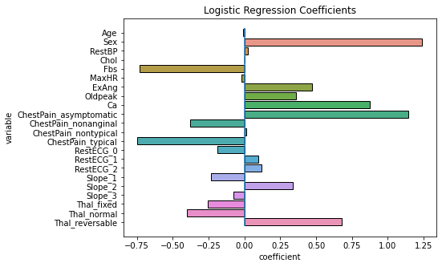
Let’s compare how our predictions change now that we are using all of the features.
y_pred_prob_all = logreg.predict_proba(X_test)[:,1]i = 12
print('Patient Information:\n{}'.format(X_test.iloc[i]))
print('---------------------------------')
print('Old Predicted Probability: {}'.format(y_pred_prob[i]))
print('New Predicted Probability: {}'.format(y_pred_prob_all[i]))
print('Actual: {}'.format(y_test.iloc[i]))Patient Information:
Age 40.0
Sex 1.0
RestBP 110.0
Chol 167.0
Fbs 0.0
MaxHR 114.0
ExAng 1.0
Oldpeak 2.0
Ca 0.0
ChestPain_asymptomatic 1.0
ChestPain_nonanginal 0.0
ChestPain_nontypical 0.0
ChestPain_typical 0.0
RestECG_0 0.0
RestECG_1 0.0
RestECG_2 1.0
Slope_1 0.0
Slope_2 1.0
Slope_3 0.0
Thal_fixed 0.0
Thal_normal 0.0
Thal_reversable 1.0
Name: 29, dtype: float64
---------------------------------
Old Predicted Probability: 0.2853929404189306
New Predicted Probability: 0.9232807558408163
Actual: YesNow, let’s look at the ROC curve and score.
fp_rate, tp_rate, thresholds = roc_curve(y_test == 'Yes', y_pred_prob_all)
plt.plot(fp_rate, tp_rate)
plt.xlim([0.0, 1.0])
plt.ylim([0.0, 1.0])
plt.title('ROC curve for Heart Disease Prediction')
plt.xlabel('False Positive Rate (1 - Specificity)')
plt.ylabel('True Positive Rate (Sensitivity)')
plt.grid(True)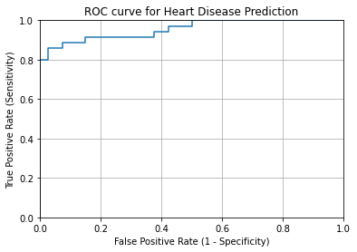
roc_auc_score(y_test, y_pred_prob_all)0.955Finally, let’s look at the new accuracy score.
y_pred = logreg.predict(X_test)
plot_confusion_matrix(y_test, y_pred, labels = ['No', 'Yes'], metric = 'accuracy')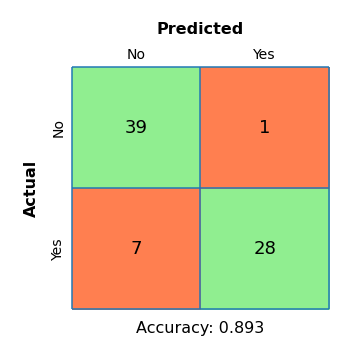